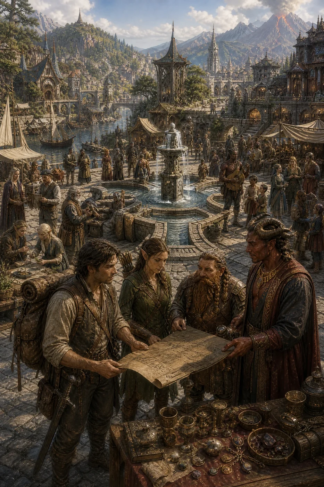
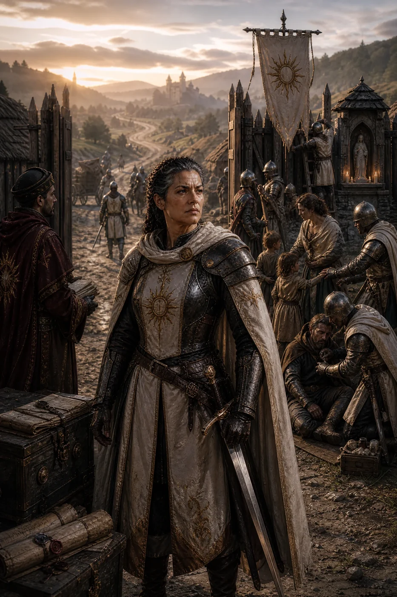
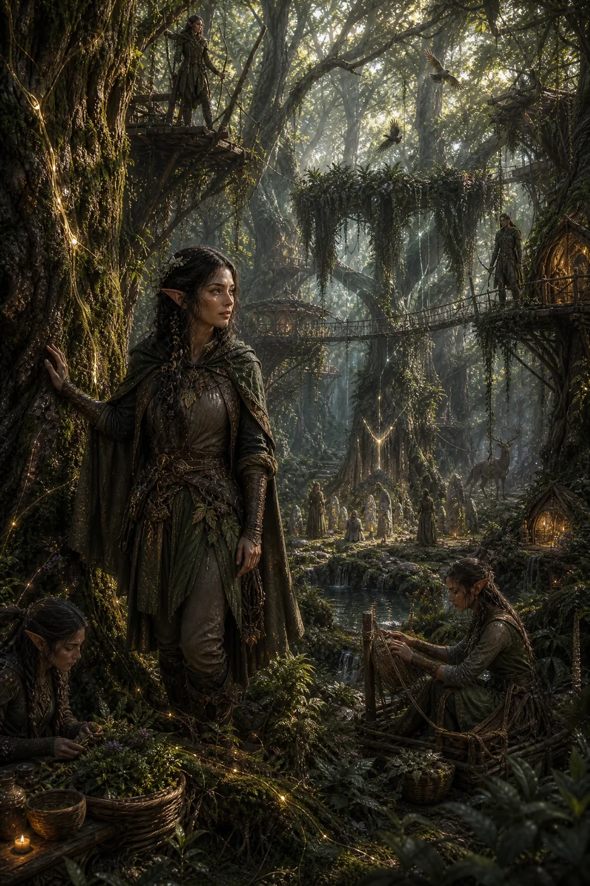
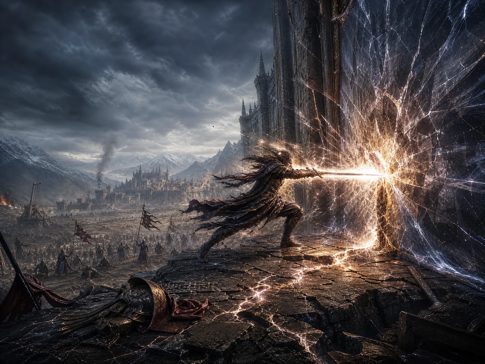
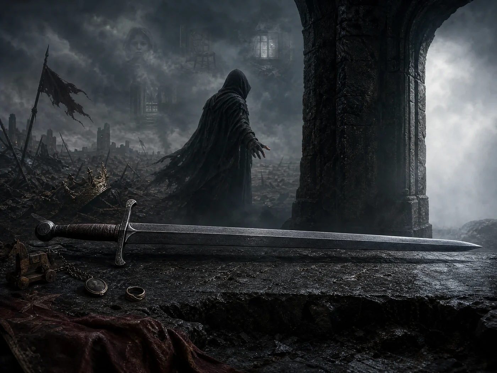
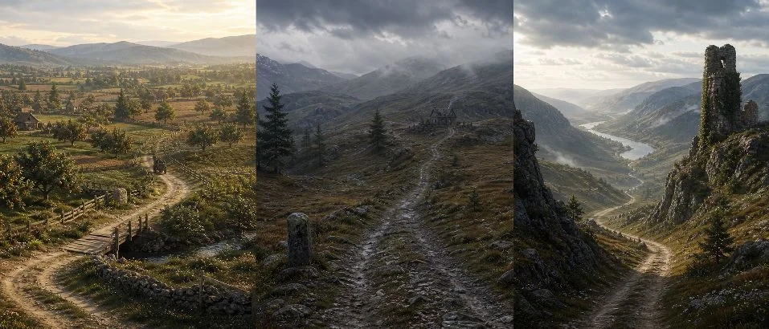
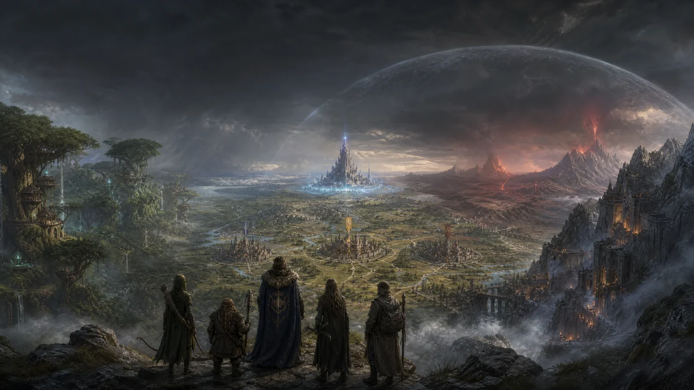

Treze livros. Um universo.
Encontre as regras, os povos e os segredos que dão vida à sua mesa.
Conhecer o mundo
 Capa · Geografia
Capa · Geografiaassets/img/home/capa-geografia.pngOs três reinos humanos, Encruzilhada e as terras élficas, anãs e demoníacas por completo.
Abrir livro
Sociedade
Religião, facções, leis, justiça e o calendário de Valédria.
Abrir livro
Economia
Moedas, custo de vida, regras de comércio e o catálogo completo de itens básicos.
Abrir livro
Facções
A Guilda de Aventureiros e as facções jogáveis: Ordem do Alvorecer, Círculo da Chama Silenciosa e Liga dos Caminhos.
Abrir livroCriar e jogar
 Capa · Sistema
Capa · Sistemaassets/img/home/capa-sistema.pngAtributos, testes, combate, perícias, papéis e progressão de personagem.
Abrir livro
Raças
Humanos e suas castas, elfos, anões e as cinco linhagens demoníacas.
Abrir livro Capa · Magia
Capa · Magiaassets/img/home/capa-magia.pngAs sete escolas do Grimório, do Aprendiz ao grau Deus.
Abrir livro
Aura
Os quatro Caminhos marciais e o Fôlego de Aura.
Abrir livro
Artefatos
Do artefato comum às armas lendárias, cada uma com sua condição e maldição.
Abrir livroPreparar aventuras
 Capa · Bestiário
Capa · Bestiárioassets/img/home/capa-bestiario.pngTrinta e três feras e monstros de todos os territórios, do Lobo das Estradas às criaturas Lendárias.
Abrir livro
Clima, Viagem e Encontros
Tempos de viagem, efeitos climáticos e tabelas de encontro aleatório.
Abrir livro
Livro do Mestre
Campanhas, encontros e ferramentas para narrar Valédria.
Abrir livro
Mapa e Aventuras
Mapa clicável de Valédria, dossiês de cidades, gerador de aventuras regionais e relações entre personagens.
Abrir livro